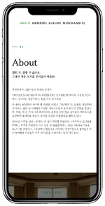
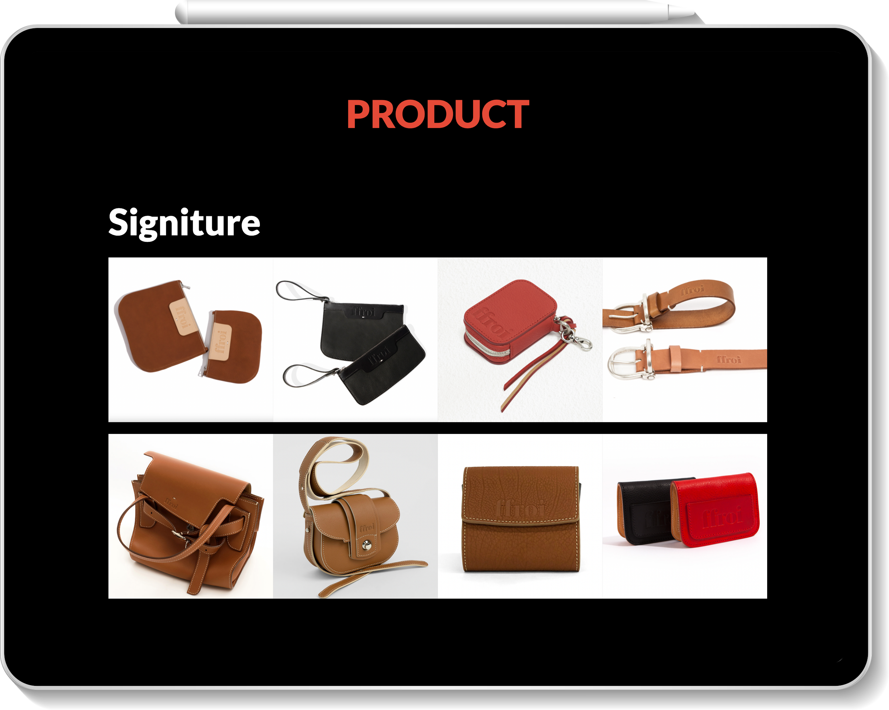
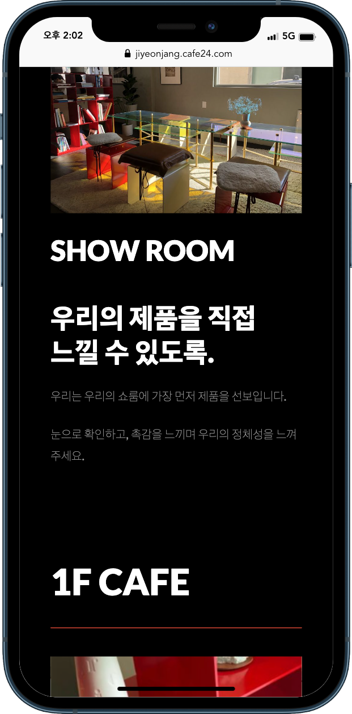

Front-End & Web Publisher JANG JIYEON
프로필 소개
- 장지연
- JANG JIYEON
- 1995.04.10
- Phone.+82.10-3265-2310
- Email.jangjiyeon0401@gmail.com
- SKILL
-
HTML5, CSS3(SASS, LESS), JavaScript, jQuery, 비동기처리(AJAX/JSON), 반응형 Framework(Bootstrap), CMS(WordPress), PHP, MySQL, Github, Adobe Photoshop, illustrator


한국만화영상진흥원PC
기존 xhtml방식으로 구현된 한국만화영상진흥원 홈페이지 pc버전을 html5/css3를 사용하여 최신 트렌드를 반영한 디자인으로 새롭게 구현했습니다. 또한 이미지로 표현되어있던 텍스트와 이미지 alt누락 등의 문제점을 웹표준과 접근성을 준수한 방식으로 개선하였습니다.
GO TO SEE- 제작기간
- 약 4주
- 제작스킬
- HTML5, CSS3, JavaScript, jQuery, AJAX, PHP, MySql, Adobe Photoshop, illustrator, W3C 웹표준 통합 마크업 검사(html/css), 웹접근성검사(K-WAH), 크로스브라우징 완료
- Noto Sans KR / Roboto

한국만화영상진흥원모바일
PC용으로 구현된 한국만화영상진흥원 홈페이지를 모바일 기기에 적합한 UI를 적용하여 새롭게 구현한 모바일용 웹사이트입니다. 마우스가 아닌 사용자의 터치 이벤트를 중점적으로 구현했으며, PC버전과는 다르게 사용자 경험을 고려하여 간략화된 컨텐츠와 메뉴로 구성하였습니다.
GO TO SEE- 제작기간
- 약 2주
- 제작스킬
- HTML5, CSS3, JavaScript, jQuery, AJAX, PHP, MySql, Adobe Photoshop, illustrator, W3C 웹표준 통합 마크업 검사(html/css), 웹접근성검사(K-WAH), 크로스브라우징 완료
- Noto Sans KR / Roboto

화양연화반응형 웹
영화 화양연화를 주제로 한 반응형 웹사이트입니다. 다양한 해상도를 고려하여 각 해상도 별로 최적화된 UI로 구성하여 사용자가 폭 넓게 이용할 수 있도록 반응형 웹을 구축했으며, 영화의 분위기와 이미지를 고려하여 시각적인 부분을 강조하여 제작했습니다.
GO TO SEE- 제작기간
- 약 2주
- 제작스킬
- HTML5, CSS3, Media Query, JavaScript, jQuery, AJAX, Adobe Photoshop, illustrator, Premiere Pro, W3C 웹표준 통합 마크업 검사(html/css), 웹접근성검사(K-WAH), 크로스브라우징 완료
- PT Serif / Bodoni Moda / Noto Serif HK

서울문화정보SPA
. 공공데이터 API를 이용하여 서울시에서 개최되는 다양한 문화행사정보를 조회할 수 있는 기능을 구현하였습니다. 서울문화정보 소개를 주제로 Vue를 사용해 SPA를 구현했습니다
GO TO SEE- 제작기간
- 약 3일
- 제작스킬
- HTML5, CSS3, Vue, Javascript, Adobe Photoshop, illustrator, 크로스브라우징 완료

밴드잔나비부트스트랩
밴드 잔나비를 주제로 부트스트랩을 이용하여 보다 간편하게, 다양한 해상도의 디바이스에서 이용할 수 있는 반응형 웹사이트를 제작하였습니다.
GO TO SEE- 제작기간
- 약 3일
- 제작스킬
- BootStrap, HTML5, CSS3, Adobe Photoshop, illustrator, 크로스브라우징 완료


일식점어가워드프레스
오픈소스 CMS 중 가장 많이 쓰이는 워드프레스의 테마와 플러그인을 사용하여 일식점 어가를 주제로 한 웹사이트를 보다 간편하고 빠르게 구현했습니다.
GO TO SEE- 제작기간
- 약 2일
- 제작스킬
- wordpress, HTML5, CSS3, Adobe Photoshop, illustrator, 크로스브라우징 완료

